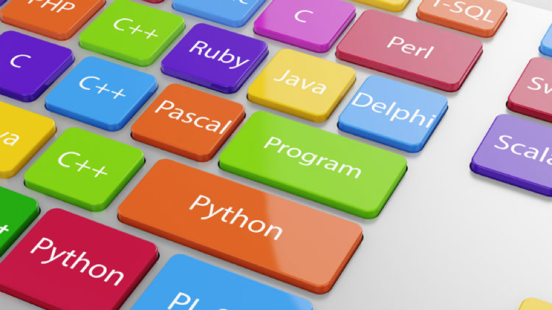
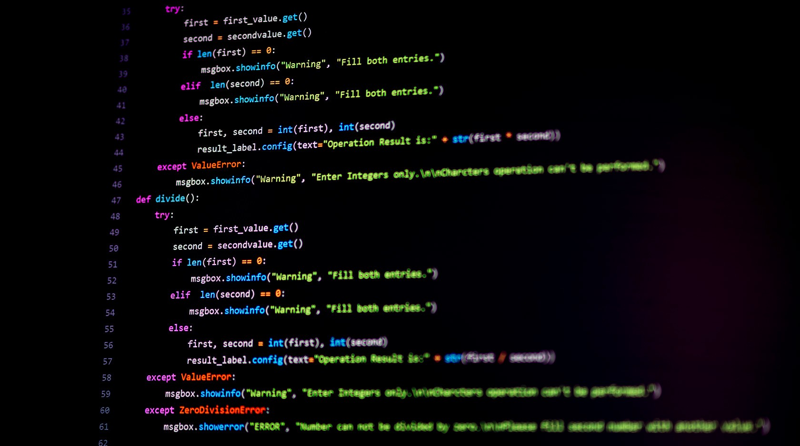

DESVENTAJAS DE PHYTON
Lentitud al ejecutar múltiples hilos: a pesar de que no necesita compilarse, si quieres ejecutar múltiples hilos de programación puede que no aproveches toda la potencia de tu PC. Por ejemplo, pueden surgir errores por parte del intérprete o simplemente tener problemas para usar todos los núcleos del procesador.
No dispone de buena documentación: Python no cuenta con buena documentación, por lo que puedes tener problemas para comprender algunas librerías y ciertas estructuras, sobre todo si no has programado antes. Todo ello comparado con otros lenguajes de programación como Java, PHP o C++.
Problemas con hosting: existen muchos servidores que no soportan Python y en caso de hacerlo, su configuración suele ser compleja.


Youtube
wikipedia
instagram
Facebook
Spotify